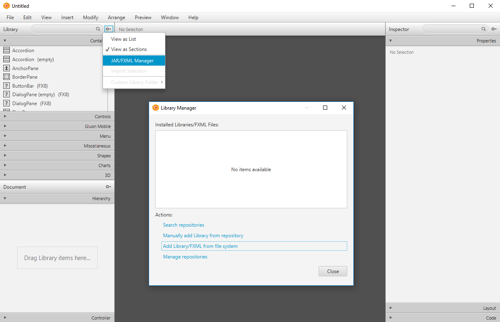

JavaFX Nutshell example staff
This Nutshell example exploits a third party shared library called "ControlsFX", which is an open source project that aims to provide additional high quality GUI controls to JavaFX. You can find the ControlsFX license agreement here: license.txt.
You can get the latest version of ControlsFX here: http://fxexperience.com/controlsfx/. This example (staff) uses ControlsFX version 8.40.12 (as of 2017-03-21) and demonstrates the usage of the following JavaFX GUI classes:
This application consists of a TableView with predefined data. You can change the data by clicking on items of the BreadCrumbBar located at the top right corner of the window. By activating the TableRowExpanderColumn marked with a "+" in the table a Rating bar shows up to rate each employee. Every user interaction in the staff nutshell example is followed either by the MaskerPane appearing or a Notification.
To start this Application, the JAR File "controlsfx-8.40.12.jar" located in the application directory has to be included in the Java environmental variable "CLASSPATH". Luckily, the staff application provides a way to do this on-the-fly using one of the following shell files:
controlsfx-8.40.12.jar |
Java archive containing the ControlsFX JavaFX GUI controls. |
css/style.css |
The style sheet for this application |
fxml/put_FXID_objects_into.my.app.rex |
Rexx utility program that saves all JavaFX objects of the FXML-file globally for Rexx. |
fxml/staff.fxml |
FXML file defining the JavaFX GUI. |
fxml/staffController.rxj |
Rexx program serving as the controller. |
images/bsf4oorexx_032.png |
The image representing the BSF4ooRexx logo used as the application icon. |
license.txt |
ControlFX license. |
readme.html |
This file. |
run.cmd |
The Windows script to start the application by adding temporarily the JAR file to the CLASSPATH environment variable, such that Java becomes able to find and load the ControlFX JavaFX GUI Java classes. |
run.sh |
The Unix script to start the application by adding temporarily the JAR file to the CLASSPATH environment variable, such that Java becomes able to find and load the ControlFX JavaFX GUI Java classes. |
staff.rxj |
The Rexx staff application program. |
SceneBuilder is an open-source tool for creating and modifying FXML files. It is also possible to inject third party java archives to import additional components to SceneBuilder. Simply go to "Library" and open the "Library Manager" by clicking on "JAR/FXML Manager" as shown in the Screenshot below. Using this form you can add JavaFX components from jar files and make them available to your JavaFX application.
Author: Adrian Baginski
Date of Creation: 2017-03-20
{kind=link}